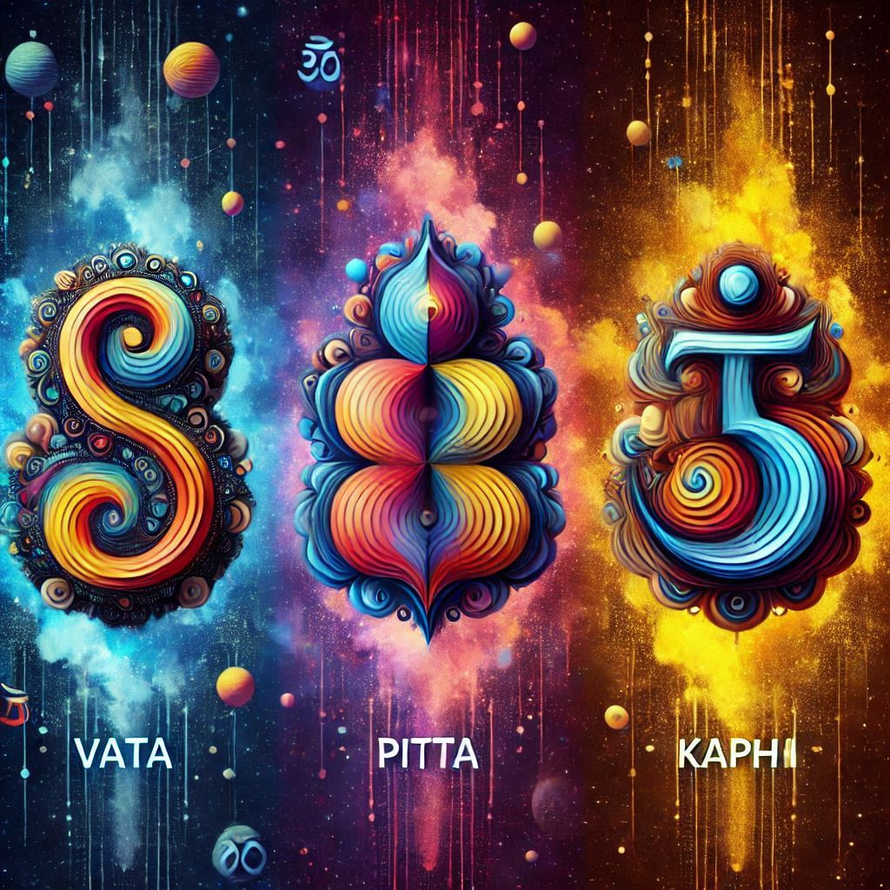
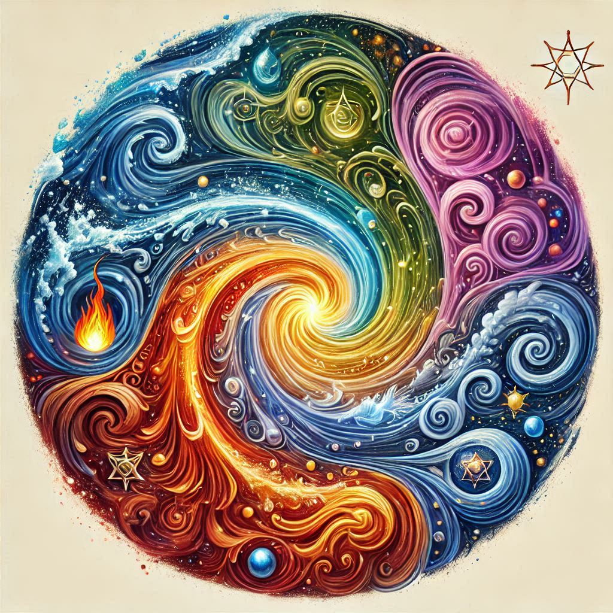

What is Vatha, Pitta, and Kapha?
In Vedic Astrology, the concepts of Vata, Pitta, and Kapha are closely linked to Ayurveda and are used to understand an individual’s constitution and health.

Vatha (Vata):
- Planets: Governed by Mercury and Saturn.
- Qualities: Represents air and ether elements, associated with movement, creativity, and flexibility.
- Astrological Influence: Vatha individuals are often quick-thinking, adaptable, and energetic but may also experience anxiety and restlessness when out of balance
Pitta:
- Planets: Governed by the Sun and Mars.
- Qualities: Fire and water elements, associated with metabolism and focus.
- Astrological Influence: Pitta individuals are typically intelligent, driven, and focused but can become irritable and aggressive when imbalanced
Kapha:
- Planets: Governed by the Moon and Venus.
- Qualities: Stability, nourishment, and endurance.
- Astrological Influence: Kapha individuals are often calm, compassionate, and reliable but may struggle with lethargy and attachment when out of balance.
When Vatha (Vata), Pitta, and Kapha are in balance, the individual experiences optimal health and well-being.Here’s what the balanced state of each dosha brings to a person:
Balanced Vata
- Mental Clarity: Sharp and clear thinking, creativity, and enthusiasm.
- Good Circulation: Healthy blood flow, strong digestion, and regular bowel movements.
- Flexibility: Both physically and mentally adaptable, with a positive outlook.
Balanced Pitta
- Strong Digestion: Efficient metabolism and excellent digestive fire (Agni).
- Intelligence and Focus: Keen intellect, sharp memory, and strong decision-making abilities.
- Balanced Emotions: Calm temperament, patience, and emotional stability.
Balanced Kapha
- Strong Immunity: Robust immune system and resistance to illness.
- Emotional Stability: Calm, compassionate, and steady demeanor.
- Physical Strength: Endurance, physical strength, and healthy body weight.
Benefits of Balanced Doshas
- Optimal Health: Reduced risk of illness and faster recovery from health issues.
- Emotional Well-being: Balanced emotions and mental peace.
- Harmonious Relationships: Healthy interpersonal relationships and effective communication.
- Overall Vitality: High energy levels, enthusiasm for life, and a sense of fulfillment.
Maintaining this balance requires a lifestyle that includes proper diet, regular exercise, adequate rest, and mindfulness practices. Ayurveda offers personalized recommendations to help individuals achieve and maintain this state of equilibrium.
The Pancha Maha Bhutas (also known as the five great elements)
These elements are believed to be the building blocks of the universe and everything within it.

Prithvi (Earth)
- Qualities: Solidity, stability, and grounding.
- Associated with: The physical structure of the body, bones, and muscles.
- Symbolizes: Strength, support, and nourishment.
Apas (Water)
- Qualities: Fluidity, adaptability, and change.
- Associated with: Body fluids, lymphatic system, and hydration.
- Symbolizes: Flexibility, cleansing, and emotional depth.
Agni (Fire)
- Qualities: Energy, transformation, and intensity.
- Associated with: Digestive fire (Agni), metabolism, and body temperature.
- Symbolizes: Passion, drive, and transformation.
Vayu (Air)
- Qualities: Movement, expansion, and communication.
- Associated with: Breath, circulation, and respiration.
- Symbolizes: Freedom, agility, and vitality.
Akasha (Space or Ether)
- Qualities: Emptiness, consciousness, and intuition.
- Associated with: The space within the body, such as the cavities and the mind.
- Symbolizes: Awareness, openness, and connection.
These elements are thought to be present in all living and non-living things, and their balance is essential for health and well-being. In Ayurveda, the three doshas (Vata, Pitta, and Kapha) are combinations of these elements, and maintaining their balance is key to preventing illness and promoting harmony.